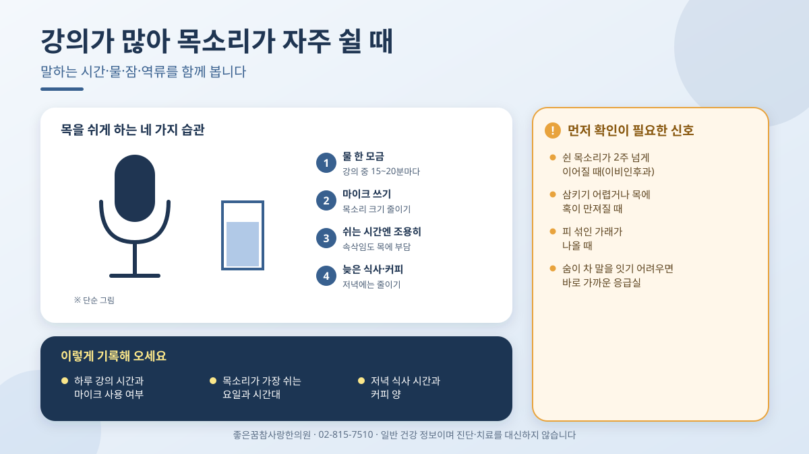

강사, 교사, 상담직처럼 목소리를 많이 쓰는 분의 쉰 목소리는 말하는 시간, 물 마시는 습관, 잠, 역류 증상을 먼저 묻고 목을 쉬게 하는 방법을 함께 정리하며, 2주 넘게 이어지면 이비인후과 진료를 권합니다.
여쭙는 것
- 하루에 몇 시간 정도 말씀하시나요? 마이크를 쓰시나요?
- 강의 중에 물을 얼마나 자주 드시나요?
- 아침보다 저녁에 목소리가 더 쉬나요?
생활에서 해 볼 것
- 강의 중 15~20분마다 물 한 모금 마시기
- 마이크를 써서 목소리 크기 줄이기
- 쉬는 시간에는 속삭이기보다 그냥 조용히 쉬기(속삭임도 목에 부담이 됩니다)
한의원에서 함께 살필 것
- 목을 많이 쓰는 일로 목소리가 자주 쉬는 경우 목 상태와 함께 피로와 잠을 살핍니다.
- 목이 자주 마르고 열감이 있는 편인지 몸의 경향을 함께 살핍니다.
- 속이 쓰리고 목에 뭔가 걸린 느낌이 함께 있는 경우 소화도 이어서 여쭙니다.
먼저 확인이 필요한 신호
- 쉰 목소리가 2주 넘게 이어지는 경우(이비인후과 후두 확인 권장)
- 삼키기 어렵거나 목에 혹이 만져지는 경우
- 피 섞인 가래가 나오는 경우

강의를 많이 해서 목소리가 자주 쉬는 것은 성대가 쉬지 못하고 계속 부딪히며 마르는 경우가 많아, 말하는 시간과 물 마시는 습관, 잠과 역류 증상을 함께 살피고 목을 쉬게 하는 방법을 정리합니다. 노량진 학원가에는 하루 몇 시간씩 마이크를 잡는 분이 많아, 학기 중반이면 목소리가 갈라진다는 이야기를 자주 듣습니다. 2주 넘게 쉰 목소리가 이어지면 이비인후과에서 후두 확인을 먼저 받으세요.
왜 이런 불편이 생길 수 있나요
- 큰 목소리로 오래 말하면 성대가 계속 부딪히며 붓고 마를 수 있습니다.
- 물을 적게 마시고 건조한 강의실에 오래 있으면 성대 점막이 더 쉽게 지칩니다.
- 늦은 식사와 커피로 위산이 목까지 올라오면 아침 목소리가 갈라지기도 합니다.
- 피로와 잠 부족이 겹친 시기에 더 심해진다는 분이 많습니다.

먼저 이렇게 여쭙니다
- 하루에 몇 시간 정도 말씀하시나요? 마이크를 쓰시나요?
- 강의 중에 물을 얼마나 자주 드시나요?
- 아침보다 저녁에 목소리가 더 쉬나요?
- 속쓰림이나 신물이 올라오는 느낌이 있나요?
일상에서 먼저 해 볼 수 있는 것
- 강의 중 15~20분마다 물 한 모금 마시기
- 마이크를 써서 목소리 크기 줄이기
- 쉬는 시간에는 속삭이기보다 그냥 조용히 쉬기(속삭임도 목에 부담이 됩니다)
- 저녁 늦은 식사와 커피 줄이기
- 강의가 없는 날에는 노래방처럼 큰 소리를 내는 일 피하기

한의원에서 함께 살필 수 있는 경우
- 목을 많이 쓰는 일로 목소리가 자주 쉬는 경우 목 상태와 함께 피로와 잠을 살핍니다.
- 목이 자주 마르고 열감이 있는 편인지 몸의 경향을 함께 살핍니다.
- 속이 쓰리고 목에 뭔가 걸린 느낌이 함께 있는 경우 소화도 이어서 여쭙니다.
좋은꿈참사랑한의원에서는 하루 강의 일정과 목을 쓰는 방식을 먼저 듣고, 필요하다고 판단될 때 진맥·설진으로 몸 상태를 살핀 뒤 침이나 한약 상담 등 상태에 맞는 방법을 정합니다. 평일 저녁 8시까지 진료해 강의를 마친 뒤 들르기도 좋습니다.
이렇게 기록해 오시면 상담이 쉬워집니다
- 하루 강의 시간과 마이크 사용 여부
- 목소리가 가장 쉬는 요일과 시간대
- 저녁 식사 시간과 커피 양
- 이비인후과에서 받은 검사 결과(있다면)
- 목소리가 쉰 날의 잠든 시간과 피로 정도

이런 증상은 먼저 확인이 필요합니다
- 쉰 목소리가 2주 넘게 이어지는 경우(이비인후과 후두 확인 권장)
- 삼키기 어렵거나 목에 혹이 만져지는 경우
- 피 섞인 가래가 나오는 경우
- 목이 심하게 아프고 열이 함께 나는 경우
숨이 차서 말을 잇기 어렵거나 입술이 파래지면 바로 119나 가까운 응급실을 찾으세요. 쓰고 있는 흡입기나 먹는 약은 처방한 의사와 상의 없이 줄이거나 끊지 않습니다.
한눈에 보는 표
| 구분 | 핵심 |
|---|---|
| 여쭙는 것 | 하루에 몇 시간 정도 말씀하시나요? 마이크를 쓰시나요? 강의 중에 물을 얼마나 자주 드시나요? |
| 생활에서 해 볼 것 | 강의 중 15~20분마다 물 한 모금 마시기 마이크를 써서 목소리 크기 줄이기 |
| 한의원에서 함께 살필 것 | 목을 많이 쓰는 일로 목소리가 자주 쉬는 경우 목 상태와 함께 피로와 잠을 살핍니다. 목이 자주 마르고 열감이 있는 편인지 몸의 경향을 함께 살핍니다. |
| 먼저 확인이 필요한 신호 | 쉰 목소리가 2주 넘게 이어지는 경우(이비인후과 후두 확인 권장) 삼키기 어렵거나 목에 혹이 만져지는 경우 |
자주 묻는 질문
목캔디가 도움이 되나요?
잠깐 시원할 수 있지만 물을 자주 마시는 것이 기본입니다.
목소리를 완전히 쉬어야 하나요?
쉴 수 있는 날에는 말을 줄이는 것이 좋고, 일하는 날에는 마이크와 물로 부담을 줄입니다.
목을 풀려고 헛기침을 자주 하는데 괜찮나요?
헛기침은 성대를 세게 부딪히게 해 부담을 줄 수 있어, 물 한 모금을 삼키는 방법으로 바꿔 보세요.
목에 좋은 차가 있나요?
따뜻한 물이나 카페인이 적은 차를 자주 마시는 것이 기본입니다. 특정 음료가 목을 낫게 한다고 단정하기는 어렵습니다.
이 글은 일반적인 건강 정보이며 개인의 진단이나 치료를 대신하지 않습니다. 증상이 있거나 복용 중인 약이 있다면 진료를 통해 확인하세요. 치료 효과는 개인마다 다를 수 있습니다.
좋은꿈참사랑한의원은 재진 때 지난번 이야기부터 이어서 여쭙니다. 진료시간과 예약은 오시는 길에서 확인하세요.